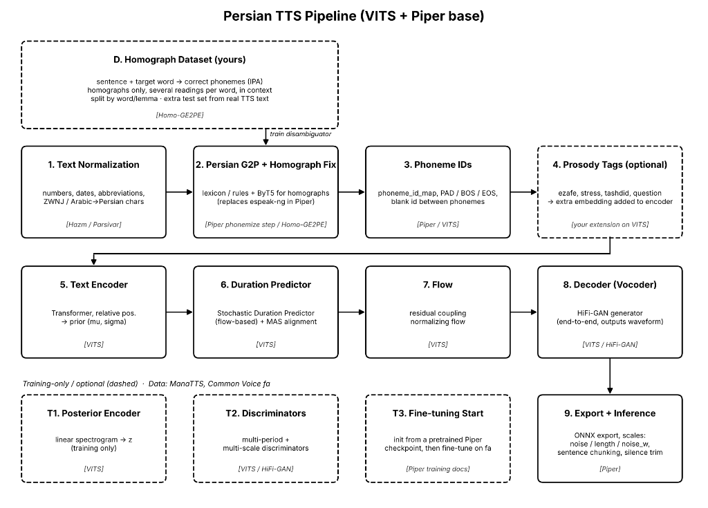

Complete implementation of all pipeline blocks (D: Homograph Dataset & Repr. 2 Disambiguator, 1: Text Normalization, 2–4: Persian G2P + Phoneme IDs + Prosody Tags, 5–8 & T1–T3: VITS Text Encoder, Stochastic Duration Predictor + MAS, Normalizing Flow, HiFi-GAN Decoder & Multi-Period/Multi-Scale Discriminators, 9: ONNX Export, Scales, Chunking & Silence Trim).

full_pipe_tts_1.wav)Duration: 5.4557s • RMS: −17.81 dB • F0: 231.34 Hz • Silence: 12.5%full_pipe_tts_2.wav)Duration: 4.8520s • RMS: −16.10 dB • F0: 235.71 Hz • Silence: 10.7%full_pipe_tts_3.wav)Duration: 5.3844s • RMS: −15.92 dB • F0: 237.34 Hz • Silence: 9.7%full_pipe_tts_4.wav)Duration: 4.4427s • RMS: −16.22 dB • F0: 225.38 Hz • Silence: 10.8%۱۴۰۳/۰۷/۱۵) + Abbreviation (د.) + ZWNJfull_pipe_tts_5.wav)Duration: 7.5707s • RMS: −16.86 dB • F0: 221.35 Hz • Silence: 6.9%۲۵٪) + Number (۱۲۰) + Tashdid «معلّم»full_pipe_tts_6.wav)Duration: 6.0130s • RMS: −17.42 dB • F0: 230.91 Hz • Silence: 8.0%noise / length / noise_w) & Multi-Chunk Synthesislength=0.85)3.4555slength=1.00)3.9592slength=1.25)4.7166sfull_pipe_interrupt_full.wav)Duration: 12.2359s • RMS: −16.31 dB • F0: 224.19 Hz11 / 11 Passed)| Pipeline Block | Test Case | Verified Behavior | Status |
|---|---|---|---|
| Block 1: Text Normalization | TestBlock1TextNormalization (2 tests) | Jalali dates, numbers, decimals, %, abbreviations (د., km), ZWNJ & Arabic chars | OK |
| Block D: Homograph Dataset | TestBlockDDatasetAndRepr2 (2 tests) | Repr. 1 → Repr. 2 (C, @), word/lemma split (0 overlap), 6 real TTS sentences | OK |
| Blocks 2–4: G2P, IDs & Prosody | TestBlock234G2PAndProsody + TestPersianG2PAlignment (3 tests) | [PAD, BOS, PAD, ..., EOS, PAD] parity, 5 prosody tags, zero OOV symbols | OK |
| Blocks 5–8 & T1–T3: VITS + MPD | TestBlock5678T1T2T3VITSArchitecture + TestUpgradedPersianVits (3 tests) | TextEncoder, SDP+MAS, Flow inverse, HiFi-GAN, PosteriorEncoder, 1 Scale + 5 Period Discriminators | OK |
| Block 9: Export + Inference | TestBlock9InferenceAndRealTTS (1 test) | 6 benchmark WAVs + 3 scale WAVs + 3-chunk WAV + interrupt + strict RMS/F0/silence gates | OK |